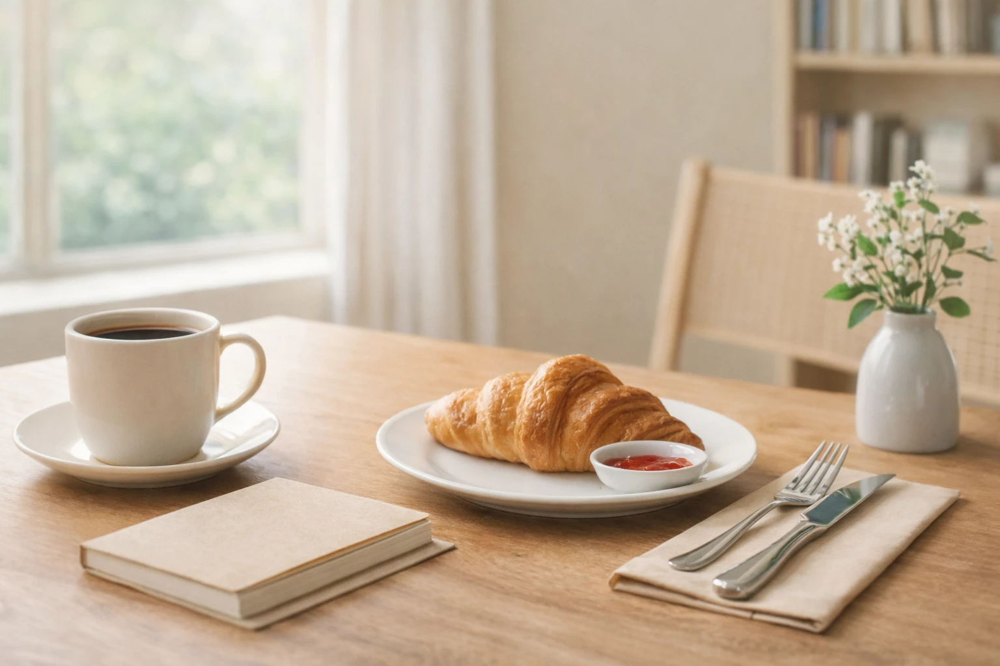
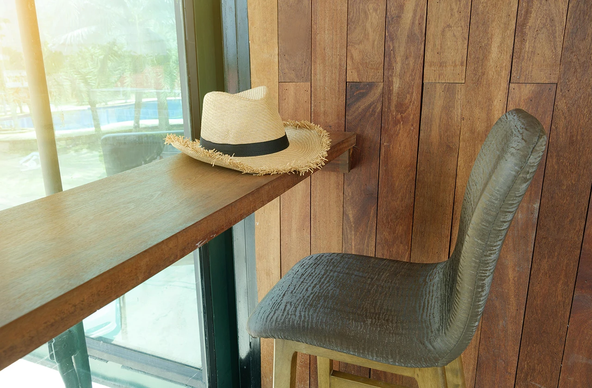

我們相信，一個人吃飯也可以自在而從容。 一席食地想整理的不只是餐廳，而是那些讓人可以安心坐下來的用餐空間。

一席食地是一個整理單人友善餐廳的網站。
在生活節奏越來越忙碌的現在，越來越多人習慣一個人吃飯、喝咖啡，或是在餐廳短暫休息。一個人的用餐時間，其實早已成為日常生活的一部分。然而，在找餐廳時，常常會發現許多餐廳仍以多人聚餐為主要設計。
「一席食地」因此誕生，希望透過整理適合單人用餐的餐廳資訊，讓一個人吃飯也能更自在地找到適合自己的地方。
對許多人來說，一個人吃飯並不是特別的事情。但在現實的餐廳空間裡，一個人用餐有時仍然會遇到一些不太方便的情況。
例如需要併桌的大桌、較少提供單人座位，或是空間設計本來就以多人聚餐為主。在這樣的環境裡，一個人吃飯有時反而會變得有些不自在。
一席食地希望透過整理與分類，讓想要一個人用餐的人，可以更快找到適合自己的餐廳空間。

一席食地主要整理適合單人用餐的餐廳類型，例如一人燒肉、一人火鍋、單人友善咖啡廳。
在整理餐廳資訊時，也會特別觀察餐廳的座位設計與用餐環境，例如是否提供吧檯席、單人座位，或是不需要併桌的用餐空間。
透過這些資訊整理，讀者可以更容易判斷餐廳是否適合一個人前往。
一席食地的內容主要包含三個方向：單人友善餐廳整理、用餐指南與資訊、實際餐廳食記分享。
透過分類整理與實際用餐經驗，一席食地希望讓讀者在找餐廳時，可以更快找到適合自己的選擇。
慢慢地，每個人都能在這裡建立一份屬於自己的「一人用餐地圖」。